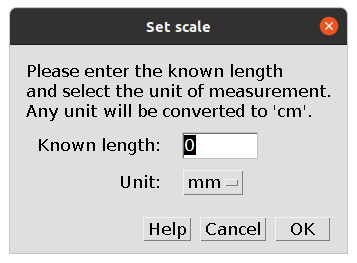

3 Set scale
Two analyses, Main Traits and Gut Traits, require to set the scale for the image. This is the first step of both analyses. The following dialog box appears.

Trace a straight line on a reference object and click OK.
The reference object can also be the fish itself if its length (standard, fork, or total) is known. In this case trace a line over the fish to select the appropriate length.
The following dialog box appears.

Enter the known length of the traced line and select the unit from the drop down list. Three options are available (mm, cm, and inch), but any unit will then be converted to cm. Thus all linear measurements will be saved in cm and areas in cm2.
The traced line will be stored in the ROI Manager as px.cm and then saved with all other ROIs. A column px/cm will also be included in the results file indicating the scale of the images (pixels cm-1).
At the moment it is not possible to run the Main Traits and Gut Traits analyses on images without a reference object or known fish length as setting the scale is required. However, in the upcoming update setting the scale will become optional and all images can be analysed.